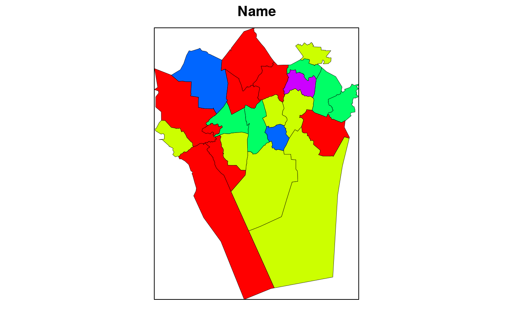

Visualize the specified fields of a shape object on using 1- or 2-way color scale.
This function is used for fast investigation of shape objects; standard visualization choices are made automatically; fast and easy-to-use but does not necessarily provide optimal visualization.
plot_shape(sp, varname, type = "oneway", ncol = 10, at = NULL, palette = NULL, main = NULL, colorkey = TRUE, lwd = 0.4, border.col = "black", col.regions = NULL, min.color = "white", max.color = "red", plot = TRUE)
| sp | Shape object |
|---|---|
| varname | Variable name from the shape object sp to be visualized |
| type | String. Specifies visualization type. Options: "oneway", "twoway", "qualitative", "custom". See details. |
| ncol | Number of distinct colors shades |
| at | Color transition points |
| palette | Optional. Color palette. |
| main | Optional. Title text. |
| colorkey | Logical. Show color interpretation in a separate legend. |
| lwd | Optional. Line width for shape polygon borders. |
| border.col | Optional. Color for shape polygon borders. |
| col.regions | Optional. Specify color for the shape object regions manually. |
| min.color | Color for minimum values in the color scale |
| max.color | Color for maximum values in the color scale |
| plot | Plot the image TRUE/FALSE |
A Trellis Plot Object
Visualization types include: oneway/sequential (color scale ranges from white to dark red, or custom color given with the palette argument); twoway/bipolar/diverging (color scale ranges from dark blue through white to dark red; or custom colors); discrete/qualitative (discrete color scale; the colors are used to visually separate regions); and "custom" (specify colors with the col.regions argument)
See citation("gisfin")
#>#>#>#>#> OGR data source with driver: LIBKML #> Source: "/tmp/RtmpPdjRNL/PKS_suuralue.kml", layer: "pks_suuralue" #> with 23 features #> It has 18 fields#> Warning: p4s= argument given as: +init=epsg:4258 #> and read as: +proj=longlat +datum=WGS84 +no_defs #> read string overridden by given p4s= argument value#> Warning: Z-dimension discarded#> #>plot_shape(sp=sp.suuralue, varname="Name", type="discrete", plot=FALSE);#>